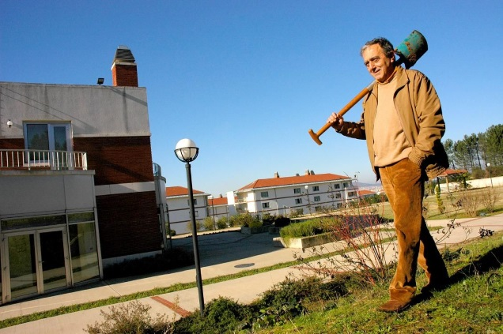

Dört bölüm: insanı tanımak, üniversiteyi kurmak, doğayla bağ kurmak ve bahçede hatırlamak. Aynı hikâye üç ayrıntı düzeyinde anlatılıyor.
SADE ANLATIM
Bir insan, bir üniversite, bir bahçe
BÖLÜM 1 · TOSUN TERZİOĞLU KİMDİ?
Bahçedeki ismin ardındaki insan
Bahçenin adında karşılaştığınız Tosun Terzioğlu, bir matematikçi ve Sabancı Üniversitesi’nin kurucu rektörüydü. 1942’de İstanbul’da doğdu. Akademisyenlik ve bilim yöneticiliğiyle geçen yaşamı, sonunda bu kampüsün kuruluşuyla kesişti.
Sabancı Üniversitesi · Tosun Terzioğlu özgeçmişi
BÖLÜM 2 · BİNALARDAN ÖNCE BİR DÜŞÜNCE
Nasıl bir üniversite hayal etti?
Tosun Hoca, öğrencilerin merak eden ve kendi kararlarını verebilen insanlar olarak yetişmesini önemsiyordu. Dinlemeye ve özgür düşünceye verdiği değer, Sabancı’nın üniversite kültürünün oluşumunda etkili oldu.
Sabancı Üniversitesi · Tosun Terzioğlu özgeçmişi · Nesrin Balkan · Bir güzel ve iyi insanı, Tosun Terzioğlu’nu anıyoruz · gazeteSU · 2017 anma töreni ve bahçe projesi
BÖLÜM 3 · DOĞAYLA KURDUĞU BAĞ
Kampüsü ağaçlarıyla tanımak
Tosun Hoca kampüsün bitkileriyle yakından ilgilenirdi. Peyzaj çalışmalarını izler, kampüs turlarında ağaçları ve bitkileri tanıtırdı. Adının bir bahçede yaşaması, doğayla kurduğu bu bağla ilişkilidir.
Nesrin Balkan · Bir güzel ve iyi insanı, Tosun Terzioğlu’nu anıyoruz · Ayşe Kadıoğlu · 23 Şubat 2017 anma konuşması
BÖLÜM 4 · HATIRANIN YAŞADIĞI YER
Neden bir bahçe?
Tosun Terzioğlu’nun 2016’daki vefatından sonra, anısına Bilgi Merkezi’nin yanında bu bahçe oluşturuldu. 30 Haziran 2017’de açılan bahçe; bitkiler, su ve dinlenme alanlarıyla onun doğaya ilgisini hatırlatıyor. Burada durmak, hikâyesine küçük bir mola vermek gibi düşünülebilir.
gazeteSU · 2017 mezuniyet ve bahçe açılışı duyurusu · FENS · Tosun Terzioğlu Kürsüsü / Bahçe açılışı · gazeteSU · 2017 anma töreni ve bahçe projesi · Ayşe Kadıoğlu · 23 Şubat 2017 anma konuşması
ORTA ANLATIM
Bir insan, bir üniversite, bir bahçe
BÖLÜM 1 · TOSUN TERZİOĞLU KİMDİ?
Bahçedeki ismin ardındaki insan
Bu bahçenin hikâyesi, adını taşıdığı insanla başlıyor. Tosun Terzioğlu 1942’de İstanbul’da doğdu. Matematik öğrenimini Newcastle’da, doktorasını Frankfurt’ta tamamladı. Türkiye’ye dönünce ODTÜ’de çalıştı; daha sonra TÜBİTAK Başkanlığı yaptı.
1997’de Sabancı Üniversitesi’nin kurucu rektörü olarak yeni bir göreve başladı. Bahçedeki isim, böylece hem bir bilim insanını hem de bugün içinde bulunduğunuz üniversitenin kuruluşunda çalışan bir eğitimciyi hatırlatıyor.
Sabancı Üniversitesi · Tosun Terzioğlu özgeçmişi
BÖLÜM 2 · BİNALARDAN ÖNCE BİR DÜŞÜNCE
Nasıl bir üniversite hayal etti?
Bir üniversite kurulurken binalar kadar, o binaların içinde nasıl öğrenileceği de şekillenir. Tosun Terzioğlu’nun kurucu rektörlüğü 1997’den 2009’a kadar sürdü.
Onu anlatan çalışma arkadaşları, dinlemeyi bilen ve katı hiyerarşiden hoşlanmayan bir insanı hatırlıyor. Ayşe Kadıoğlu’nun anma konuşması, bu özelliklerin Sabancı’nın kültürüne yansıdığını vurguluyor. Buradaki hedef, öğrencinin soru sorabilmesi ve düşüncesini özgürce geliştirebilmesiydi. Hikâyenin bu bölümü, bahçeye adını veren kişinin kampüsün düşünce ortamında bıraktığı izi anlatıyor.
Sabancı Üniversitesi · Tosun Terzioğlu özgeçmişi · Nesrin Balkan · Bir güzel ve iyi insanı, Tosun Terzioğlu’nu anıyoruz · gazeteSU · 2017 anma töreni ve bahçe projesi
BÖLÜM 3 · DOĞAYLA KURDUĞU BAĞ
Kampüsü ağaçlarıyla tanımak
Tosun Hoca’yı tanımak için bir anlığına rektörlük makamından kampüs yollarına geçelim. Nesrin Balkan’ın anma yazısı, onun 1999’da başlayan peyzaj çalışmalarına ilgisini anlatıyor. Hangi bitkinin nereye dikileceğiyle ilgileniyor, kampüs turlarında bitkileri öğrencilere ve çalışanlara tanıtıyordu.
2017’deki anma konuşmasında, sevdiği bitkiler arasında “kış tatlısı” da anılıyor. Bu ayrıntı, bahçenin neden anlamlı bir anma biçimi olduğunu gösteriyor: Buradaki yeşillik, onun hayatında zaten yeri olan bir ilgiyi hatırlatıyor.
Nesrin Balkan · Bir güzel ve iyi insanı, Tosun Terzioğlu’nu anıyoruz · Ayşe Kadıoğlu · 23 Şubat 2017 anma konuşması
BÖLÜM 4 · HATIRANIN YAŞADIĞI YER
Neden bir bahçe?
 Tosun Terzioğlu Bahçesi · Sabancı Üniversitesi
Tosun Terzioğlu Bahçesi · Sabancı ÜniversitesiTosun Terzioğlu 23 Şubat 2016’da yaşamını yitirdi. Onu kampüste yaşatmak için hazırlanan bahçe, Bilgi Merkezi’nin yanında yaklaşık 2,5 dönümlük alanda kuruldu ve 30 Haziran 2017’de açıldı.
Proje anlatımında sevdiği bitkiler ve ağaçlar, akan su, doğal malzemeler ve insanların oturup düşünebileceği alanlar öne çıkıyordu. Bu seçimler, onun doğaya ilgisiyle insanları dinlemeye ve konuşmaya verdiği değeri aynı yerde buluşturuyordu.
Bu nedenle buradaki hikâyeyi yalnız bir isim levhasında aramıyoruz. Bahçede dinlenmek, çevreyi merak etmek ya da bir arkadaşla konuşmak da bu hatırayla ilişki kurmanın bir yolu olabilir.
gazeteSU · 2017 mezuniyet ve bahçe açılışı duyurusu · FENS · Tosun Terzioğlu Kürsüsü / Bahçe açılışı · gazeteSU · 2017 anma töreni ve bahçe projesi · Ayşe Kadıoğlu · 23 Şubat 2017 anma konuşması
DETAYLI ANLATIM
Bir insan, bir üniversite, bir bahçe
BÖLÜM 1 · TOSUN TERZİOĞLU KİMDİ?
Bahçedeki ismin ardındaki insan
Tosun Terzioğlu · Sabancı Üniversitesi / gazeteSUBir bahçeye girerken önce ağaçları, suyu ya da oturacak bir yeri fark edebiliriz. Burada bir de isim var: Tosun Terzioğlu. Bu ismin ardındaki yolculuk, 13 Mart 1942’de İstanbul’da başladı.
Robert Kolej’den sonra matematik öğrenimi için Newcastle’a gitti; lisansını 1965’te tamamladı. 1968’de Frankfurt’ta doktorasını bitirip Türkiye’ye döndü ve ODTÜ Matematik Bölümü’nde çalışmaya başladı. Akademik yaşamında ders verdi, araştırmalar yaptı ve üniversite yönetiminde görev aldı. 1992–1997 arasında TÜBİTAK Başkanı olarak çalıştı.
1997’de İstanbul’a dönüşü, henüz kuruluş aşamasındaki Sabancı Üniversitesi’nin rektörlüğünü üstlenmesiyle oldu. Matematikten bilim yönetimine uzanan bu birikim, yeni bir üniversitenin oluşumuna taşındı. Bahçenin hikâyesindeki ilk bağlantı bu: Adını gördüğünüz kişi, bu kampüsün kuruluş sürecinin de bir parçasıydı.
Sabancı Üniversitesi · Tosun Terzioğlu özgeçmişi
BÖLÜM 2 · BİNALARDAN ÖNCE BİR DÜŞÜNCE
Nasıl bir üniversite hayal etti?
Şimdi bahçeden kampüsün binalarına doğru bakın. Bir üniversitenin kuruluşunu yalnızca tamamlanan yapılarla düşünürsek hikâyenin bir bölümünü kaçırırız. Asıl sorulardan biri, öğrencilerle hocaların nasıl bir ortamda bir araya geleceğidir.
Tosun Terzioğlu, 1997–2009 arasındaki kurucu rektörlüğü sırasında bu ortamın oluşumunda rol aldı. 2017’deki anma töreninde Ayşe Kadıoğlu; onun alçakgönüllülüğünü, dinlemeyi bilmesini ve katı hiyerarşiye mesafesini üniversite kültürüyle ilişkilendirdi. Akademik özgürlüğün korunmasına verdiği desteği de vurguladı.
Aynı törende kızı Ayşecan Terzioğlu, kuruluş döneminde babasını heyecanlandıran düşüncelerden birinin, bilimsel bilginin hiyerarşi engeline takılmadan üretilip paylaşılması olduğunu anlattı. Bu tanıklık bize kişiliğiyle kurumsal yaklaşımı arasındaki bağı gösteriyor. Bahçeyi birazdan dinlenme ve sohbet alanı olarak ele aldığımızda, bu düşünce hikâyenin diğer parçasıyla birleşecek.
Sabancı Üniversitesi · Tosun Terzioğlu özgeçmişi · Nesrin Balkan · Bir güzel ve iyi insanı, Tosun Terzioğlu’nu anıyoruz · gazeteSU · 2017 anma töreni ve bahçe projesi
BÖLÜM 3 · DOĞAYLA KURDUĞU BAĞ
Kampüsü ağaçlarıyla tanımak

Kampüste Tosun Hoca · Sabancı Üniversitesi / gazeteSUBir önceki bölümde bilginin paylaşılmasından söz ettik. Tosun Hoca’nın kampüsteki bitkilere ilgisi, bu paylaşımın dersliklerin dışına taşan bir örneği. Nesrin Balkan’ın anma yazısında, 1999’da kampüs inşaatının ardından başlayan peyzaj çalışmalarını yakından takip ettiği anlatılıyor. Ağaçların ve bitkilerin seçimine, nereye dikileceklerine ilgi gösteriyordu.
Yazı, yeni öğrencilere ve isteyen çalışanlara düzenlediği kampüs turlarını da hatırlatıyor. Bu yürüyüşlerde bitki örtüsünü ve doğal yapıları tanıtıyordu. Buradan çıkan anlatı, yalnızca yeşilliği seven bir yönetici değil; çevresindeki canlıları tanıyan ve bu bilgisini başkalarıyla paylaşan bir insan portresi.
Ayşe Kadıoğlu’nun 2017’deki konuşmasında “kış tatlısı”, onun sevdiği söylenen bitkilerden biri olarak geçiyor. Sevdiği bir bitkinin adının yıllar sonra bir anma konuşmasında yer alması, doğayla kurduğu bağın çalışma arkadaşlarının hafızasında da kaldığını düşündürüyor. Şimdi çevrenizdeki bir bitkiye bakın: Adını, ne zaman çiçeklendiğini ya da burada neden bulunduğunu merak etmek, bu bölümün küçük daveti.
Nesrin Balkan · Bir güzel ve iyi insanı, Tosun Terzioğlu’nu anıyoruz · Ayşe Kadıoğlu · 23 Şubat 2017 anma konuşması
BÖLÜM 4 · HATIRANIN YAŞADIĞI YER
Neden bir bahçe?
Tosun Terzioğlu Bahçesi · Sabancı ÜniversitesiŞimdi hikâyenin başladığı yere, bahçeye dönelim. Tosun Terzioğlu’nun 23 Şubat 2016’daki vefatından sonra üniversite içinde anısını yaşatacak çalışmalar yapıldı. Bu bahçe de onlardan biriydi. Bilgi Merkezi’nin yanındaki yaklaşık 2,5 dönümlük alan, 30 Haziran 2017’de açıldı. Peyzaj çalışmaları Kartepe Peyzaj tarafından yürütüldü.
Bahçe henüz hazırlanırken yapılan tanıtımda, onun sevdiği bitki ve ağaçlara, akan suya, doğal malzemelere ve insanların dinlenip düşünebileceği oturma alanlarına yer verileceği anlatılıyordu. Ayşe Kadıoğlu da bahçeyi üniversite topluluğunun kendini dinleyebileceği ve birbiriyle konuşabileceği bir yer olarak tarif etti.
Bu ayrıntıları yan yana koyunca, “neden bir bahçe?” sorusu anlam kazanıyor. Bu bahçeyi, doğaya ilginin, merakın ve diyaloğun bir arada yaşayabildiği bir hatırlama alanı olarak düşünebiliriz.
Turun sonunda sizden büyük bir şey yapmanız beklenmiyor. Bir bitkiyi fark etmek, suya bakmak ya da burada birkaç dakika sohbet etmek yeterli. Başlangıçta bir isimle karşılaştınız; şimdi o ismi bir bilim insanı, bir eğitimci ve doğayla ilgilenen bir insanın hikâyesiyle birlikte okuyabilirsiniz.
gazeteSU · 2017 mezuniyet ve bahçe açılışı duyurusu · FENS · Tosun Terzioğlu Kürsüsü / Bahçe açılışı · gazeteSU · 2017 anma töreni ve bahçe projesi · Ayşe Kadıoğlu · 23 Şubat 2017 anma konuşması
Bilgiler biyografi ve anma kaynaklarına dayanır. Bölüm geçişleri, yorumlar ve ziyaretçiye sorular özgün anlatımdır; kişiye ait doğrudan sözler veya kurgulanmış anılar içermez.